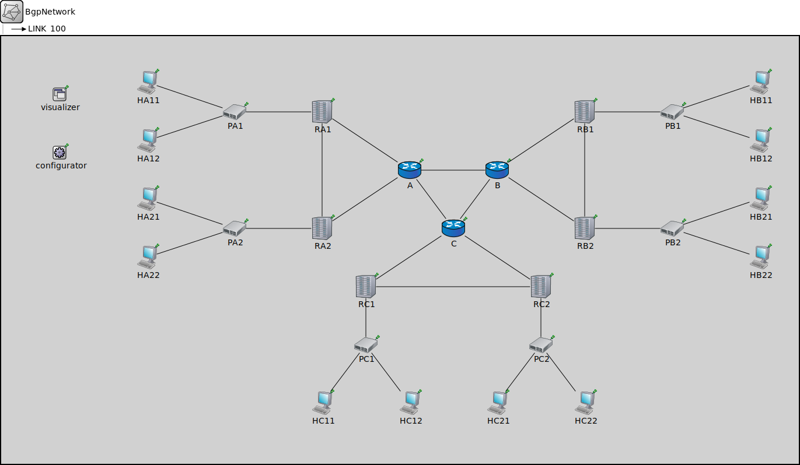

Package: inet.examples.bgpv4.Bgp3Routers
BgpNetwork
network(no description)
Usage diagram
The following diagram shows usage relationships between types. Unresolved types are missing from the diagram.
Properties
| Name | Value | Description |
|---|---|---|
| isNetwork |
Unassigned submodule parameters
| Name | Type | Default value | Description |
|---|---|---|---|
| configurator.minLinkWeight | double | 1E-3 | |
| configurator.configureIsolatedNetworksSeparatly | bool | false | |
| configurator.assignAddresses | bool | true |
assign IP addresses to all interfaces in the network |
| configurator.assignUniqueAddresses | bool | true |
avoid using the same address and raise an error if not possible |
| configurator.assignDisjunctSubnetAddresses | bool | true |
avoid using the same address prefix and netmask on different links when assigning IP addresses to interfaces |
| configurator.addDirectRoutes | bool | true |
add direct routes (i.e. directly connected interfaces) to the routing table (used only if addStaticRoutes is true) |
| configurator.optimizeRoutes | bool | true |
optimize routing tables by merging routes, the resulting routing table might route more packets than the original (used only if addStaticRoutes is true) |
| configurator.dumpTopology | bool | false |
print extracted network topology to the module output |
| configurator.dumpLinks | bool | false |
print recognized network links to the module output |
| configurator.dumpAddresses | bool | false |
print assigned IP addresses for all interfaces to the module output |
| configurator.dumpRoutes | bool | false |
print configured and optimized routing tables for all nodes to the module output |
| configurator.dumpConfig | string | "" |
write configuration into the given config file that can be fed back to speed up subsequent runs (network configurations) |
| A.status.initialStatus | string | "UP" |
TODO @signal, @statistic |
| A.pcapRecorder.verbose | bool | true |
whether to log packets on the module output |
| A.pcapRecorder.pcapFile | string | "" |
the PCAP file to be written |
| A.pcapRecorder.fileFormat | string | "pcapng" | |
| A.pcapRecorder.snaplen | int | 65535 |
maximum number of bytes to record per packet |
| A.pcapRecorder.dumpBadFrames | bool | true |
enable dump of frames with hasBitError |
| A.pcapRecorder.moduleNamePatterns | string | "wlan[*] eth[*] ppp[*]" |
space-separated list of sibling module names to listen on |
| A.pcapRecorder.sendingSignalNames | string | "packetSentToLower" |
space-separated list of outbound packet signals to subscribe to |
| A.pcapRecorder.receivingSignalNames | string | "packetReceivedFromLower" |
space-separated list of inbound packet signals to subscribe to |
| A.pcapRecorder.dumpProtocols | string | "ethernetmac ppp ieee80211mac" |
space-separated list of protocol names as defined in the Protocol class |
| A.pcapRecorder.packetFilter | object | "*" |
which packets are considered, matches all packets by default |
| A.pcapRecorder.helpers | string | "" |
usable PcapRecorder::IHelper helpers for accept packettype and store/convert packet as specified linktype currently available: "inet::AckingMacToEthernetPcapRecorderHelper" |
| A.pcapRecorder.alwaysFlush | bool | false |
flush the pcapFile after each write to ensure that all packets are captured in case of a crash |
| A.pcapRecorder.displayStringTextFormat | string | "rec: %n pks" | |
| A.interfaceTable.displayAddresses | bool | false |
whether to display IP addresses on links |
| A.cb.displayStringTextFormat | string | "processed %p pk (%l)" |
determines the text that is written on top of the submodule |
| A.cb.forwardServiceRegistration | bool | true | |
| A.cb.forwardProtocolRegistration | bool | true | |
| A.bl.displayStringTextFormat | string | "processed %p pk (%l)" |
determines the text that is written on top of the submodule |
| A.bl.forwardServiceRegistration | bool | true | |
| A.bl.forwardProtocolRegistration | bool | true | |
| A.li.displayStringTextFormat | string | "processed %p pk (%l)" |
determines the text that is written on top of the submodule |
| A.li.forwardServiceRegistration | bool | true | |
| A.li.forwardProtocolRegistration | bool | true | |
| A.eth.bitrate | double | ||
| A.nl.displayStringTextFormat | string | "processed %p pk (%l)" |
determines the text that is written on top of the submodule |
| A.nl.forwardServiceRegistration | bool | true | |
| A.nl.forwardProtocolRegistration | bool | true | |
| A.tn.displayStringTextFormat | string | "processed %p pk (%l)" |
determines the text that is written on top of the submodule |
| A.tn.forwardServiceRegistration | bool | true | |
| A.tn.forwardProtocolRegistration | bool | true | |
| A.at.displayStringTextFormat | string | "processed %p pk (%l)" |
determines the text that is written on top of the submodule |
| A.at.forwardServiceRegistration | bool | true | |
| A.at.forwardProtocolRegistration | bool | true | |
| A.bgp.interfaceTableModule | string |
The path to the InterfaceTable module |
|
| A.bgp.routingTableModule | string | ||
| A.bgp.ospfRoutingModule | string | parent.hasOspf ? "^.ospf" : "" | |
| B.status.initialStatus | string | "UP" |
TODO @signal, @statistic |
| B.pcapRecorder.verbose | bool | true |
whether to log packets on the module output |
| B.pcapRecorder.pcapFile | string | "" |
the PCAP file to be written |
| B.pcapRecorder.fileFormat | string | "pcapng" | |
| B.pcapRecorder.snaplen | int | 65535 |
maximum number of bytes to record per packet |
| B.pcapRecorder.dumpBadFrames | bool | true |
enable dump of frames with hasBitError |
| B.pcapRecorder.moduleNamePatterns | string | "wlan[*] eth[*] ppp[*]" |
space-separated list of sibling module names to listen on |
| B.pcapRecorder.sendingSignalNames | string | "packetSentToLower" |
space-separated list of outbound packet signals to subscribe to |
| B.pcapRecorder.receivingSignalNames | string | "packetReceivedFromLower" |
space-separated list of inbound packet signals to subscribe to |
| B.pcapRecorder.dumpProtocols | string | "ethernetmac ppp ieee80211mac" |
space-separated list of protocol names as defined in the Protocol class |
| B.pcapRecorder.packetFilter | object | "*" |
which packets are considered, matches all packets by default |
| B.pcapRecorder.helpers | string | "" |
usable PcapRecorder::IHelper helpers for accept packettype and store/convert packet as specified linktype currently available: "inet::AckingMacToEthernetPcapRecorderHelper" |
| B.pcapRecorder.alwaysFlush | bool | false |
flush the pcapFile after each write to ensure that all packets are captured in case of a crash |
| B.pcapRecorder.displayStringTextFormat | string | "rec: %n pks" | |
| B.interfaceTable.displayAddresses | bool | false |
whether to display IP addresses on links |
| B.cb.displayStringTextFormat | string | "processed %p pk (%l)" |
determines the text that is written on top of the submodule |
| B.cb.forwardServiceRegistration | bool | true | |
| B.cb.forwardProtocolRegistration | bool | true | |
| B.bl.displayStringTextFormat | string | "processed %p pk (%l)" |
determines the text that is written on top of the submodule |
| B.bl.forwardServiceRegistration | bool | true | |
| B.bl.forwardProtocolRegistration | bool | true | |
| B.li.displayStringTextFormat | string | "processed %p pk (%l)" |
determines the text that is written on top of the submodule |
| B.li.forwardServiceRegistration | bool | true | |
| B.li.forwardProtocolRegistration | bool | true | |
| B.eth.bitrate | double | ||
| B.nl.displayStringTextFormat | string | "processed %p pk (%l)" |
determines the text that is written on top of the submodule |
| B.nl.forwardServiceRegistration | bool | true | |
| B.nl.forwardProtocolRegistration | bool | true | |
| B.tn.displayStringTextFormat | string | "processed %p pk (%l)" |
determines the text that is written on top of the submodule |
| B.tn.forwardServiceRegistration | bool | true | |
| B.tn.forwardProtocolRegistration | bool | true | |
| B.at.displayStringTextFormat | string | "processed %p pk (%l)" |
determines the text that is written on top of the submodule |
| B.at.forwardServiceRegistration | bool | true | |
| B.at.forwardProtocolRegistration | bool | true | |
| B.bgp.interfaceTableModule | string |
The path to the InterfaceTable module |
|
| B.bgp.routingTableModule | string | ||
| B.bgp.ospfRoutingModule | string | parent.hasOspf ? "^.ospf" : "" | |
| C.status.initialStatus | string | "UP" |
TODO @signal, @statistic |
| C.pcapRecorder.verbose | bool | true |
whether to log packets on the module output |
| C.pcapRecorder.pcapFile | string | "" |
the PCAP file to be written |
| C.pcapRecorder.fileFormat | string | "pcapng" | |
| C.pcapRecorder.snaplen | int | 65535 |
maximum number of bytes to record per packet |
| C.pcapRecorder.dumpBadFrames | bool | true |
enable dump of frames with hasBitError |
| C.pcapRecorder.moduleNamePatterns | string | "wlan[*] eth[*] ppp[*]" |
space-separated list of sibling module names to listen on |
| C.pcapRecorder.sendingSignalNames | string | "packetSentToLower" |
space-separated list of outbound packet signals to subscribe to |
| C.pcapRecorder.receivingSignalNames | string | "packetReceivedFromLower" |
space-separated list of inbound packet signals to subscribe to |
| C.pcapRecorder.dumpProtocols | string | "ethernetmac ppp ieee80211mac" |
space-separated list of protocol names as defined in the Protocol class |
| C.pcapRecorder.packetFilter | object | "*" |
which packets are considered, matches all packets by default |
| C.pcapRecorder.helpers | string | "" |
usable PcapRecorder::IHelper helpers for accept packettype and store/convert packet as specified linktype currently available: "inet::AckingMacToEthernetPcapRecorderHelper" |
| C.pcapRecorder.alwaysFlush | bool | false |
flush the pcapFile after each write to ensure that all packets are captured in case of a crash |
| C.pcapRecorder.displayStringTextFormat | string | "rec: %n pks" | |
| C.interfaceTable.displayAddresses | bool | false |
whether to display IP addresses on links |
| C.cb.displayStringTextFormat | string | "processed %p pk (%l)" |
determines the text that is written on top of the submodule |
| C.cb.forwardServiceRegistration | bool | true | |
| C.cb.forwardProtocolRegistration | bool | true | |
| C.bl.displayStringTextFormat | string | "processed %p pk (%l)" |
determines the text that is written on top of the submodule |
| C.bl.forwardServiceRegistration | bool | true | |
| C.bl.forwardProtocolRegistration | bool | true | |
| C.li.displayStringTextFormat | string | "processed %p pk (%l)" |
determines the text that is written on top of the submodule |
| C.li.forwardServiceRegistration | bool | true | |
| C.li.forwardProtocolRegistration | bool | true | |
| C.eth.bitrate | double | ||
| C.nl.displayStringTextFormat | string | "processed %p pk (%l)" |
determines the text that is written on top of the submodule |
| C.nl.forwardServiceRegistration | bool | true | |
| C.nl.forwardProtocolRegistration | bool | true | |
| C.tn.displayStringTextFormat | string | "processed %p pk (%l)" |
determines the text that is written on top of the submodule |
| C.tn.forwardServiceRegistration | bool | true | |
| C.tn.forwardProtocolRegistration | bool | true | |
| C.at.displayStringTextFormat | string | "processed %p pk (%l)" |
determines the text that is written on top of the submodule |
| C.at.forwardServiceRegistration | bool | true | |
| C.at.forwardProtocolRegistration | bool | true | |
| C.bgp.interfaceTableModule | string |
The path to the InterfaceTable module |
|
| C.bgp.routingTableModule | string | ||
| C.bgp.ospfRoutingModule | string | parent.hasOspf ? "^.ospf" : "" | |
| RA1.status.initialStatus | string | "UP" |
TODO @signal, @statistic |
| RA1.pcapRecorder.verbose | bool | true |
whether to log packets on the module output |
| RA1.pcapRecorder.pcapFile | string | "" |
the PCAP file to be written |
| RA1.pcapRecorder.fileFormat | string | "pcapng" | |
| RA1.pcapRecorder.snaplen | int | 65535 |
maximum number of bytes to record per packet |
| RA1.pcapRecorder.dumpBadFrames | bool | true |
enable dump of frames with hasBitError |
| RA1.pcapRecorder.moduleNamePatterns | string | "wlan[*] eth[*] ppp[*]" |
space-separated list of sibling module names to listen on |
| RA1.pcapRecorder.sendingSignalNames | string | "packetSentToLower" |
space-separated list of outbound packet signals to subscribe to |
| RA1.pcapRecorder.receivingSignalNames | string | "packetReceivedFromLower" |
space-separated list of inbound packet signals to subscribe to |
| RA1.pcapRecorder.dumpProtocols | string | "ethernetmac ppp ieee80211mac" |
space-separated list of protocol names as defined in the Protocol class |
| RA1.pcapRecorder.packetFilter | object | "*" |
which packets are considered, matches all packets by default |
| RA1.pcapRecorder.helpers | string | "" |
usable PcapRecorder::IHelper helpers for accept packettype and store/convert packet as specified linktype currently available: "inet::AckingMacToEthernetPcapRecorderHelper" |
| RA1.pcapRecorder.alwaysFlush | bool | false |
flush the pcapFile after each write to ensure that all packets are captured in case of a crash |
| RA1.pcapRecorder.displayStringTextFormat | string | "rec: %n pks" | |
| RA1.interfaceTable.displayAddresses | bool | false |
whether to display IP addresses on links |
| RA1.cb.displayStringTextFormat | string | "processed %p pk (%l)" |
determines the text that is written on top of the submodule |
| RA1.cb.forwardServiceRegistration | bool | true | |
| RA1.cb.forwardProtocolRegistration | bool | true | |
| RA1.bl.displayStringTextFormat | string | "processed %p pk (%l)" |
determines the text that is written on top of the submodule |
| RA1.bl.forwardServiceRegistration | bool | true | |
| RA1.bl.forwardProtocolRegistration | bool | true | |
| RA1.li.displayStringTextFormat | string | "processed %p pk (%l)" |
determines the text that is written on top of the submodule |
| RA1.li.forwardServiceRegistration | bool | true | |
| RA1.li.forwardProtocolRegistration | bool | true | |
| RA1.eth.bitrate | double | ||
| RA1.nl.displayStringTextFormat | string | "processed %p pk (%l)" |
determines the text that is written on top of the submodule |
| RA1.nl.forwardServiceRegistration | bool | true | |
| RA1.nl.forwardProtocolRegistration | bool | true | |
| RA1.tn.displayStringTextFormat | string | "processed %p pk (%l)" |
determines the text that is written on top of the submodule |
| RA1.tn.forwardServiceRegistration | bool | true | |
| RA1.tn.forwardProtocolRegistration | bool | true | |
| RA1.at.displayStringTextFormat | string | "processed %p pk (%l)" |
determines the text that is written on top of the submodule |
| RA1.at.forwardServiceRegistration | bool | true | |
| RA1.at.forwardProtocolRegistration | bool | true | |
| RA1.bgp.interfaceTableModule | string |
The path to the InterfaceTable module |
|
| RA1.bgp.routingTableModule | string | ||
| RA1.bgp.ospfRoutingModule | string | parent.hasOspf ? "^.ospf" : "" | |
| RA2.status.initialStatus | string | "UP" |
TODO @signal, @statistic |
| RA2.pcapRecorder.verbose | bool | true |
whether to log packets on the module output |
| RA2.pcapRecorder.pcapFile | string | "" |
the PCAP file to be written |
| RA2.pcapRecorder.fileFormat | string | "pcapng" | |
| RA2.pcapRecorder.snaplen | int | 65535 |
maximum number of bytes to record per packet |
| RA2.pcapRecorder.dumpBadFrames | bool | true |
enable dump of frames with hasBitError |
| RA2.pcapRecorder.moduleNamePatterns | string | "wlan[*] eth[*] ppp[*]" |
space-separated list of sibling module names to listen on |
| RA2.pcapRecorder.sendingSignalNames | string | "packetSentToLower" |
space-separated list of outbound packet signals to subscribe to |
| RA2.pcapRecorder.receivingSignalNames | string | "packetReceivedFromLower" |
space-separated list of inbound packet signals to subscribe to |
| RA2.pcapRecorder.dumpProtocols | string | "ethernetmac ppp ieee80211mac" |
space-separated list of protocol names as defined in the Protocol class |
| RA2.pcapRecorder.packetFilter | object | "*" |
which packets are considered, matches all packets by default |
| RA2.pcapRecorder.helpers | string | "" |
usable PcapRecorder::IHelper helpers for accept packettype and store/convert packet as specified linktype currently available: "inet::AckingMacToEthernetPcapRecorderHelper" |
| RA2.pcapRecorder.alwaysFlush | bool | false |
flush the pcapFile after each write to ensure that all packets are captured in case of a crash |
| RA2.pcapRecorder.displayStringTextFormat | string | "rec: %n pks" | |
| RA2.interfaceTable.displayAddresses | bool | false |
whether to display IP addresses on links |
| RA2.cb.displayStringTextFormat | string | "processed %p pk (%l)" |
determines the text that is written on top of the submodule |
| RA2.cb.forwardServiceRegistration | bool | true | |
| RA2.cb.forwardProtocolRegistration | bool | true | |
| RA2.bl.displayStringTextFormat | string | "processed %p pk (%l)" |
determines the text that is written on top of the submodule |
| RA2.bl.forwardServiceRegistration | bool | true | |
| RA2.bl.forwardProtocolRegistration | bool | true | |
| RA2.li.displayStringTextFormat | string | "processed %p pk (%l)" |
determines the text that is written on top of the submodule |
| RA2.li.forwardServiceRegistration | bool | true | |
| RA2.li.forwardProtocolRegistration | bool | true | |
| RA2.eth.bitrate | double | ||
| RA2.nl.displayStringTextFormat | string | "processed %p pk (%l)" |
determines the text that is written on top of the submodule |
| RA2.nl.forwardServiceRegistration | bool | true | |
| RA2.nl.forwardProtocolRegistration | bool | true | |
| RA2.tn.displayStringTextFormat | string | "processed %p pk (%l)" |
determines the text that is written on top of the submodule |
| RA2.tn.forwardServiceRegistration | bool | true | |
| RA2.tn.forwardProtocolRegistration | bool | true | |
| RA2.at.displayStringTextFormat | string | "processed %p pk (%l)" |
determines the text that is written on top of the submodule |
| RA2.at.forwardServiceRegistration | bool | true | |
| RA2.at.forwardProtocolRegistration | bool | true | |
| RA2.bgp.interfaceTableModule | string |
The path to the InterfaceTable module |
|
| RA2.bgp.routingTableModule | string | ||
| RA2.bgp.ospfRoutingModule | string | parent.hasOspf ? "^.ospf" : "" | |
| RB1.status.initialStatus | string | "UP" |
TODO @signal, @statistic |
| RB1.pcapRecorder.verbose | bool | true |
whether to log packets on the module output |
| RB1.pcapRecorder.pcapFile | string | "" |
the PCAP file to be written |
| RB1.pcapRecorder.fileFormat | string | "pcapng" | |
| RB1.pcapRecorder.snaplen | int | 65535 |
maximum number of bytes to record per packet |
| RB1.pcapRecorder.dumpBadFrames | bool | true |
enable dump of frames with hasBitError |
| RB1.pcapRecorder.moduleNamePatterns | string | "wlan[*] eth[*] ppp[*]" |
space-separated list of sibling module names to listen on |
| RB1.pcapRecorder.sendingSignalNames | string | "packetSentToLower" |
space-separated list of outbound packet signals to subscribe to |
| RB1.pcapRecorder.receivingSignalNames | string | "packetReceivedFromLower" |
space-separated list of inbound packet signals to subscribe to |
| RB1.pcapRecorder.dumpProtocols | string | "ethernetmac ppp ieee80211mac" |
space-separated list of protocol names as defined in the Protocol class |
| RB1.pcapRecorder.packetFilter | object | "*" |
which packets are considered, matches all packets by default |
| RB1.pcapRecorder.helpers | string | "" |
usable PcapRecorder::IHelper helpers for accept packettype and store/convert packet as specified linktype currently available: "inet::AckingMacToEthernetPcapRecorderHelper" |
| RB1.pcapRecorder.alwaysFlush | bool | false |
flush the pcapFile after each write to ensure that all packets are captured in case of a crash |
| RB1.pcapRecorder.displayStringTextFormat | string | "rec: %n pks" | |
| RB1.interfaceTable.displayAddresses | bool | false |
whether to display IP addresses on links |
| RB1.cb.displayStringTextFormat | string | "processed %p pk (%l)" |
determines the text that is written on top of the submodule |
| RB1.cb.forwardServiceRegistration | bool | true | |
| RB1.cb.forwardProtocolRegistration | bool | true | |
| RB1.bl.displayStringTextFormat | string | "processed %p pk (%l)" |
determines the text that is written on top of the submodule |
| RB1.bl.forwardServiceRegistration | bool | true | |
| RB1.bl.forwardProtocolRegistration | bool | true | |
| RB1.li.displayStringTextFormat | string | "processed %p pk (%l)" |
determines the text that is written on top of the submodule |
| RB1.li.forwardServiceRegistration | bool | true | |
| RB1.li.forwardProtocolRegistration | bool | true | |
| RB1.eth.bitrate | double | ||
| RB1.nl.displayStringTextFormat | string | "processed %p pk (%l)" |
determines the text that is written on top of the submodule |
| RB1.nl.forwardServiceRegistration | bool | true | |
| RB1.nl.forwardProtocolRegistration | bool | true | |
| RB1.tn.displayStringTextFormat | string | "processed %p pk (%l)" |
determines the text that is written on top of the submodule |
| RB1.tn.forwardServiceRegistration | bool | true | |
| RB1.tn.forwardProtocolRegistration | bool | true | |
| RB1.at.displayStringTextFormat | string | "processed %p pk (%l)" |
determines the text that is written on top of the submodule |
| RB1.at.forwardServiceRegistration | bool | true | |
| RB1.at.forwardProtocolRegistration | bool | true | |
| RB1.bgp.interfaceTableModule | string |
The path to the InterfaceTable module |
|
| RB1.bgp.routingTableModule | string | ||
| RB1.bgp.ospfRoutingModule | string | parent.hasOspf ? "^.ospf" : "" | |
| RB2.status.initialStatus | string | "UP" |
TODO @signal, @statistic |
| RB2.pcapRecorder.verbose | bool | true |
whether to log packets on the module output |
| RB2.pcapRecorder.pcapFile | string | "" |
the PCAP file to be written |
| RB2.pcapRecorder.fileFormat | string | "pcapng" | |
| RB2.pcapRecorder.snaplen | int | 65535 |
maximum number of bytes to record per packet |
| RB2.pcapRecorder.dumpBadFrames | bool | true |
enable dump of frames with hasBitError |
| RB2.pcapRecorder.moduleNamePatterns | string | "wlan[*] eth[*] ppp[*]" |
space-separated list of sibling module names to listen on |
| RB2.pcapRecorder.sendingSignalNames | string | "packetSentToLower" |
space-separated list of outbound packet signals to subscribe to |
| RB2.pcapRecorder.receivingSignalNames | string | "packetReceivedFromLower" |
space-separated list of inbound packet signals to subscribe to |
| RB2.pcapRecorder.dumpProtocols | string | "ethernetmac ppp ieee80211mac" |
space-separated list of protocol names as defined in the Protocol class |
| RB2.pcapRecorder.packetFilter | object | "*" |
which packets are considered, matches all packets by default |
| RB2.pcapRecorder.helpers | string | "" |
usable PcapRecorder::IHelper helpers for accept packettype and store/convert packet as specified linktype currently available: "inet::AckingMacToEthernetPcapRecorderHelper" |
| RB2.pcapRecorder.alwaysFlush | bool | false |
flush the pcapFile after each write to ensure that all packets are captured in case of a crash |
| RB2.pcapRecorder.displayStringTextFormat | string | "rec: %n pks" | |
| RB2.interfaceTable.displayAddresses | bool | false |
whether to display IP addresses on links |
| RB2.cb.displayStringTextFormat | string | "processed %p pk (%l)" |
determines the text that is written on top of the submodule |
| RB2.cb.forwardServiceRegistration | bool | true | |
| RB2.cb.forwardProtocolRegistration | bool | true | |
| RB2.bl.displayStringTextFormat | string | "processed %p pk (%l)" |
determines the text that is written on top of the submodule |
| RB2.bl.forwardServiceRegistration | bool | true | |
| RB2.bl.forwardProtocolRegistration | bool | true | |
| RB2.li.displayStringTextFormat | string | "processed %p pk (%l)" |
determines the text that is written on top of the submodule |
| RB2.li.forwardServiceRegistration | bool | true | |
| RB2.li.forwardProtocolRegistration | bool | true | |
| RB2.eth.bitrate | double | ||
| RB2.nl.displayStringTextFormat | string | "processed %p pk (%l)" |
determines the text that is written on top of the submodule |
| RB2.nl.forwardServiceRegistration | bool | true | |
| RB2.nl.forwardProtocolRegistration | bool | true | |
| RB2.tn.displayStringTextFormat | string | "processed %p pk (%l)" |
determines the text that is written on top of the submodule |
| RB2.tn.forwardServiceRegistration | bool | true | |
| RB2.tn.forwardProtocolRegistration | bool | true | |
| RB2.at.displayStringTextFormat | string | "processed %p pk (%l)" |
determines the text that is written on top of the submodule |
| RB2.at.forwardServiceRegistration | bool | true | |
| RB2.at.forwardProtocolRegistration | bool | true | |
| RB2.bgp.interfaceTableModule | string |
The path to the InterfaceTable module |
|
| RB2.bgp.routingTableModule | string | ||
| RB2.bgp.ospfRoutingModule | string | parent.hasOspf ? "^.ospf" : "" | |
| RC1.status.initialStatus | string | "UP" |
TODO @signal, @statistic |
| RC1.pcapRecorder.verbose | bool | true |
whether to log packets on the module output |
| RC1.pcapRecorder.pcapFile | string | "" |
the PCAP file to be written |
| RC1.pcapRecorder.fileFormat | string | "pcapng" | |
| RC1.pcapRecorder.snaplen | int | 65535 |
maximum number of bytes to record per packet |
| RC1.pcapRecorder.dumpBadFrames | bool | true |
enable dump of frames with hasBitError |
| RC1.pcapRecorder.moduleNamePatterns | string | "wlan[*] eth[*] ppp[*]" |
space-separated list of sibling module names to listen on |
| RC1.pcapRecorder.sendingSignalNames | string | "packetSentToLower" |
space-separated list of outbound packet signals to subscribe to |
| RC1.pcapRecorder.receivingSignalNames | string | "packetReceivedFromLower" |
space-separated list of inbound packet signals to subscribe to |
| RC1.pcapRecorder.dumpProtocols | string | "ethernetmac ppp ieee80211mac" |
space-separated list of protocol names as defined in the Protocol class |
| RC1.pcapRecorder.packetFilter | object | "*" |
which packets are considered, matches all packets by default |
| RC1.pcapRecorder.helpers | string | "" |
usable PcapRecorder::IHelper helpers for accept packettype and store/convert packet as specified linktype currently available: "inet::AckingMacToEthernetPcapRecorderHelper" |
| RC1.pcapRecorder.alwaysFlush | bool | false |
flush the pcapFile after each write to ensure that all packets are captured in case of a crash |
| RC1.pcapRecorder.displayStringTextFormat | string | "rec: %n pks" | |
| RC1.interfaceTable.displayAddresses | bool | false |
whether to display IP addresses on links |
| RC1.cb.displayStringTextFormat | string | "processed %p pk (%l)" |
determines the text that is written on top of the submodule |
| RC1.cb.forwardServiceRegistration | bool | true | |
| RC1.cb.forwardProtocolRegistration | bool | true | |
| RC1.bl.displayStringTextFormat | string | "processed %p pk (%l)" |
determines the text that is written on top of the submodule |
| RC1.bl.forwardServiceRegistration | bool | true | |
| RC1.bl.forwardProtocolRegistration | bool | true | |
| RC1.li.displayStringTextFormat | string | "processed %p pk (%l)" |
determines the text that is written on top of the submodule |
| RC1.li.forwardServiceRegistration | bool | true | |
| RC1.li.forwardProtocolRegistration | bool | true | |
| RC1.eth.bitrate | double | ||
| RC1.nl.displayStringTextFormat | string | "processed %p pk (%l)" |
determines the text that is written on top of the submodule |
| RC1.nl.forwardServiceRegistration | bool | true | |
| RC1.nl.forwardProtocolRegistration | bool | true | |
| RC1.tn.displayStringTextFormat | string | "processed %p pk (%l)" |
determines the text that is written on top of the submodule |
| RC1.tn.forwardServiceRegistration | bool | true | |
| RC1.tn.forwardProtocolRegistration | bool | true | |
| RC1.at.displayStringTextFormat | string | "processed %p pk (%l)" |
determines the text that is written on top of the submodule |
| RC1.at.forwardServiceRegistration | bool | true | |
| RC1.at.forwardProtocolRegistration | bool | true | |
| RC1.bgp.interfaceTableModule | string |
The path to the InterfaceTable module |
|
| RC1.bgp.routingTableModule | string | ||
| RC1.bgp.ospfRoutingModule | string | parent.hasOspf ? "^.ospf" : "" | |
| RC2.status.initialStatus | string | "UP" |
TODO @signal, @statistic |
| RC2.pcapRecorder.verbose | bool | true |
whether to log packets on the module output |
| RC2.pcapRecorder.pcapFile | string | "" |
the PCAP file to be written |
| RC2.pcapRecorder.fileFormat | string | "pcapng" | |
| RC2.pcapRecorder.snaplen | int | 65535 |
maximum number of bytes to record per packet |
| RC2.pcapRecorder.dumpBadFrames | bool | true |
enable dump of frames with hasBitError |
| RC2.pcapRecorder.moduleNamePatterns | string | "wlan[*] eth[*] ppp[*]" |
space-separated list of sibling module names to listen on |
| RC2.pcapRecorder.sendingSignalNames | string | "packetSentToLower" |
space-separated list of outbound packet signals to subscribe to |
| RC2.pcapRecorder.receivingSignalNames | string | "packetReceivedFromLower" |
space-separated list of inbound packet signals to subscribe to |
| RC2.pcapRecorder.dumpProtocols | string | "ethernetmac ppp ieee80211mac" |
space-separated list of protocol names as defined in the Protocol class |
| RC2.pcapRecorder.packetFilter | object | "*" |
which packets are considered, matches all packets by default |
| RC2.pcapRecorder.helpers | string | "" |
usable PcapRecorder::IHelper helpers for accept packettype and store/convert packet as specified linktype currently available: "inet::AckingMacToEthernetPcapRecorderHelper" |
| RC2.pcapRecorder.alwaysFlush | bool | false |
flush the pcapFile after each write to ensure that all packets are captured in case of a crash |
| RC2.pcapRecorder.displayStringTextFormat | string | "rec: %n pks" | |
| RC2.interfaceTable.displayAddresses | bool | false |
whether to display IP addresses on links |
| RC2.cb.displayStringTextFormat | string | "processed %p pk (%l)" |
determines the text that is written on top of the submodule |
| RC2.cb.forwardServiceRegistration | bool | true | |
| RC2.cb.forwardProtocolRegistration | bool | true | |
| RC2.bl.displayStringTextFormat | string | "processed %p pk (%l)" |
determines the text that is written on top of the submodule |
| RC2.bl.forwardServiceRegistration | bool | true | |
| RC2.bl.forwardProtocolRegistration | bool | true | |
| RC2.li.displayStringTextFormat | string | "processed %p pk (%l)" |
determines the text that is written on top of the submodule |
| RC2.li.forwardServiceRegistration | bool | true | |
| RC2.li.forwardProtocolRegistration | bool | true | |
| RC2.eth.bitrate | double | ||
| RC2.nl.displayStringTextFormat | string | "processed %p pk (%l)" |
determines the text that is written on top of the submodule |
| RC2.nl.forwardServiceRegistration | bool | true | |
| RC2.nl.forwardProtocolRegistration | bool | true | |
| RC2.tn.displayStringTextFormat | string | "processed %p pk (%l)" |
determines the text that is written on top of the submodule |
| RC2.tn.forwardServiceRegistration | bool | true | |
| RC2.tn.forwardProtocolRegistration | bool | true | |
| RC2.at.displayStringTextFormat | string | "processed %p pk (%l)" |
determines the text that is written on top of the submodule |
| RC2.at.forwardServiceRegistration | bool | true | |
| RC2.at.forwardProtocolRegistration | bool | true | |
| RC2.bgp.interfaceTableModule | string |
The path to the InterfaceTable module |
|
| RC2.bgp.routingTableModule | string | ||
| RC2.bgp.ospfRoutingModule | string | parent.hasOspf ? "^.ospf" : "" | |
| PA1.macTable.agingTime | double | ||
| PA1.macTable.forwardingTableFile | string | ||
| PA1.interfaceTable.displayAddresses | bool | false |
whether to display IP addresses on links |
| PA1.l2NodeConfigurator.interfaceTableModule | string | ||
| PA1.l2NodeConfigurator.l2ConfiguratorModule | string | "l2NetworkConfigurator" |
the absolute path to the ~L2NetworkConfigurator; use "" if there is no configurator |
| PA1.status.initialStatus | string | "UP" |
TODO @signal, @statistic |
| PA1.pcapRecorder.verbose | bool | true |
whether to log packets on the module output |
| PA1.pcapRecorder.pcapFile | string | "" |
the PCAP file to be written |
| PA1.pcapRecorder.fileFormat | string | "pcapng" | |
| PA1.pcapRecorder.snaplen | int | 65535 |
maximum number of bytes to record per packet |
| PA1.pcapRecorder.dumpBadFrames | bool | true |
enable dump of frames with hasBitError |
| PA1.pcapRecorder.moduleNamePatterns | string | "wlan[*] eth[*] ppp[*]" |
space-separated list of sibling module names to listen on |
| PA1.pcapRecorder.sendingSignalNames | string | "packetSentToLower" |
space-separated list of outbound packet signals to subscribe to |
| PA1.pcapRecorder.receivingSignalNames | string | "packetReceivedFromLower" |
space-separated list of inbound packet signals to subscribe to |
| PA1.pcapRecorder.dumpProtocols | string | "ethernetmac ppp ieee80211mac" |
space-separated list of protocol names as defined in the Protocol class |
| PA1.pcapRecorder.packetFilter | object | "*" |
which packets are considered, matches all packets by default |
| PA1.pcapRecorder.helpers | string | "" |
usable PcapRecorder::IHelper helpers for accept packettype and store/convert packet as specified linktype currently available: "inet::AckingMacToEthernetPcapRecorderHelper" |
| PA1.pcapRecorder.alwaysFlush | bool | false |
flush the pcapFile after each write to ensure that all packets are captured in case of a crash |
| PA1.pcapRecorder.displayStringTextFormat | string | "rec: %n pks" | |
| PA1.stp.helloTime | double | ||
| PA1.stp.forwardDelay | double | ||
| PA1.stp.maxAge | double | ||
| PA1.stp.bridgePriority | int | ||
| PA1.stp.visualize | bool | ||
| PA1.sc.displayStringTextFormat | string | "processed %p pk (%l)" |
determines the text that is written on top of the submodule |
| PA1.sc.forwardServiceRegistration | bool | true | |
| PA1.sc.forwardProtocolRegistration | bool | true | |
| PA1.cb.displayStringTextFormat | string | "processed %p pk (%l)" |
determines the text that is written on top of the submodule |
| PA1.cb.forwardServiceRegistration | bool | true | |
| PA1.cb.forwardProtocolRegistration | bool | true | |
| PA1.bl.displayStringTextFormat | string | "processed %p pk (%l)" |
determines the text that is written on top of the submodule |
| PA1.bl.forwardServiceRegistration | bool | true | |
| PA1.bl.forwardProtocolRegistration | bool | true | |
| PA1.li.displayStringTextFormat | string | "processed %p pk (%l)" |
determines the text that is written on top of the submodule |
| PA1.li.forwardServiceRegistration | bool | true | |
| PA1.li.forwardProtocolRegistration | bool | true | |
| PA1.eth.bitrate | double | ||
| PA2.macTable.agingTime | double | ||
| PA2.macTable.forwardingTableFile | string | ||
| PA2.interfaceTable.displayAddresses | bool | false |
whether to display IP addresses on links |
| PA2.l2NodeConfigurator.interfaceTableModule | string | ||
| PA2.l2NodeConfigurator.l2ConfiguratorModule | string | "l2NetworkConfigurator" |
the absolute path to the ~L2NetworkConfigurator; use "" if there is no configurator |
| PA2.status.initialStatus | string | "UP" |
TODO @signal, @statistic |
| PA2.pcapRecorder.verbose | bool | true |
whether to log packets on the module output |
| PA2.pcapRecorder.pcapFile | string | "" |
the PCAP file to be written |
| PA2.pcapRecorder.fileFormat | string | "pcapng" | |
| PA2.pcapRecorder.snaplen | int | 65535 |
maximum number of bytes to record per packet |
| PA2.pcapRecorder.dumpBadFrames | bool | true |
enable dump of frames with hasBitError |
| PA2.pcapRecorder.moduleNamePatterns | string | "wlan[*] eth[*] ppp[*]" |
space-separated list of sibling module names to listen on |
| PA2.pcapRecorder.sendingSignalNames | string | "packetSentToLower" |
space-separated list of outbound packet signals to subscribe to |
| PA2.pcapRecorder.receivingSignalNames | string | "packetReceivedFromLower" |
space-separated list of inbound packet signals to subscribe to |
| PA2.pcapRecorder.dumpProtocols | string | "ethernetmac ppp ieee80211mac" |
space-separated list of protocol names as defined in the Protocol class |
| PA2.pcapRecorder.packetFilter | object | "*" |
which packets are considered, matches all packets by default |
| PA2.pcapRecorder.helpers | string | "" |
usable PcapRecorder::IHelper helpers for accept packettype and store/convert packet as specified linktype currently available: "inet::AckingMacToEthernetPcapRecorderHelper" |
| PA2.pcapRecorder.alwaysFlush | bool | false |
flush the pcapFile after each write to ensure that all packets are captured in case of a crash |
| PA2.pcapRecorder.displayStringTextFormat | string | "rec: %n pks" | |
| PA2.stp.helloTime | double | ||
| PA2.stp.forwardDelay | double | ||
| PA2.stp.maxAge | double | ||
| PA2.stp.bridgePriority | int | ||
| PA2.stp.visualize | bool | ||
| PA2.sc.displayStringTextFormat | string | "processed %p pk (%l)" |
determines the text that is written on top of the submodule |
| PA2.sc.forwardServiceRegistration | bool | true | |
| PA2.sc.forwardProtocolRegistration | bool | true | |
| PA2.cb.displayStringTextFormat | string | "processed %p pk (%l)" |
determines the text that is written on top of the submodule |
| PA2.cb.forwardServiceRegistration | bool | true | |
| PA2.cb.forwardProtocolRegistration | bool | true | |
| PA2.bl.displayStringTextFormat | string | "processed %p pk (%l)" |
determines the text that is written on top of the submodule |
| PA2.bl.forwardServiceRegistration | bool | true | |
| PA2.bl.forwardProtocolRegistration | bool | true | |
| PA2.li.displayStringTextFormat | string | "processed %p pk (%l)" |
determines the text that is written on top of the submodule |
| PA2.li.forwardServiceRegistration | bool | true | |
| PA2.li.forwardProtocolRegistration | bool | true | |
| PA2.eth.bitrate | double | ||
| PB1.macTable.agingTime | double | ||
| PB1.macTable.forwardingTableFile | string | ||
| PB1.interfaceTable.displayAddresses | bool | false |
whether to display IP addresses on links |
| PB1.l2NodeConfigurator.interfaceTableModule | string | ||
| PB1.l2NodeConfigurator.l2ConfiguratorModule | string | "l2NetworkConfigurator" |
the absolute path to the ~L2NetworkConfigurator; use "" if there is no configurator |
| PB1.status.initialStatus | string | "UP" |
TODO @signal, @statistic |
| PB1.pcapRecorder.verbose | bool | true |
whether to log packets on the module output |
| PB1.pcapRecorder.pcapFile | string | "" |
the PCAP file to be written |
| PB1.pcapRecorder.fileFormat | string | "pcapng" | |
| PB1.pcapRecorder.snaplen | int | 65535 |
maximum number of bytes to record per packet |
| PB1.pcapRecorder.dumpBadFrames | bool | true |
enable dump of frames with hasBitError |
| PB1.pcapRecorder.moduleNamePatterns | string | "wlan[*] eth[*] ppp[*]" |
space-separated list of sibling module names to listen on |
| PB1.pcapRecorder.sendingSignalNames | string | "packetSentToLower" |
space-separated list of outbound packet signals to subscribe to |
| PB1.pcapRecorder.receivingSignalNames | string | "packetReceivedFromLower" |
space-separated list of inbound packet signals to subscribe to |
| PB1.pcapRecorder.dumpProtocols | string | "ethernetmac ppp ieee80211mac" |
space-separated list of protocol names as defined in the Protocol class |
| PB1.pcapRecorder.packetFilter | object | "*" |
which packets are considered, matches all packets by default |
| PB1.pcapRecorder.helpers | string | "" |
usable PcapRecorder::IHelper helpers for accept packettype and store/convert packet as specified linktype currently available: "inet::AckingMacToEthernetPcapRecorderHelper" |
| PB1.pcapRecorder.alwaysFlush | bool | false |
flush the pcapFile after each write to ensure that all packets are captured in case of a crash |
| PB1.pcapRecorder.displayStringTextFormat | string | "rec: %n pks" | |
| PB1.stp.helloTime | double | ||
| PB1.stp.forwardDelay | double | ||
| PB1.stp.maxAge | double | ||
| PB1.stp.bridgePriority | int | ||
| PB1.stp.visualize | bool | ||
| PB1.sc.displayStringTextFormat | string | "processed %p pk (%l)" |
determines the text that is written on top of the submodule |
| PB1.sc.forwardServiceRegistration | bool | true | |
| PB1.sc.forwardProtocolRegistration | bool | true | |
| PB1.cb.displayStringTextFormat | string | "processed %p pk (%l)" |
determines the text that is written on top of the submodule |
| PB1.cb.forwardServiceRegistration | bool | true | |
| PB1.cb.forwardProtocolRegistration | bool | true | |
| PB1.bl.displayStringTextFormat | string | "processed %p pk (%l)" |
determines the text that is written on top of the submodule |
| PB1.bl.forwardServiceRegistration | bool | true | |
| PB1.bl.forwardProtocolRegistration | bool | true | |
| PB1.li.displayStringTextFormat | string | "processed %p pk (%l)" |
determines the text that is written on top of the submodule |
| PB1.li.forwardServiceRegistration | bool | true | |
| PB1.li.forwardProtocolRegistration | bool | true | |
| PB1.eth.bitrate | double | ||
| PB2.macTable.agingTime | double | ||
| PB2.macTable.forwardingTableFile | string | ||
| PB2.interfaceTable.displayAddresses | bool | false |
whether to display IP addresses on links |
| PB2.l2NodeConfigurator.interfaceTableModule | string | ||
| PB2.l2NodeConfigurator.l2ConfiguratorModule | string | "l2NetworkConfigurator" |
the absolute path to the ~L2NetworkConfigurator; use "" if there is no configurator |
| PB2.status.initialStatus | string | "UP" |
TODO @signal, @statistic |
| PB2.pcapRecorder.verbose | bool | true |
whether to log packets on the module output |
| PB2.pcapRecorder.pcapFile | string | "" |
the PCAP file to be written |
| PB2.pcapRecorder.fileFormat | string | "pcapng" | |
| PB2.pcapRecorder.snaplen | int | 65535 |
maximum number of bytes to record per packet |
| PB2.pcapRecorder.dumpBadFrames | bool | true |
enable dump of frames with hasBitError |
| PB2.pcapRecorder.moduleNamePatterns | string | "wlan[*] eth[*] ppp[*]" |
space-separated list of sibling module names to listen on |
| PB2.pcapRecorder.sendingSignalNames | string | "packetSentToLower" |
space-separated list of outbound packet signals to subscribe to |
| PB2.pcapRecorder.receivingSignalNames | string | "packetReceivedFromLower" |
space-separated list of inbound packet signals to subscribe to |
| PB2.pcapRecorder.dumpProtocols | string | "ethernetmac ppp ieee80211mac" |
space-separated list of protocol names as defined in the Protocol class |
| PB2.pcapRecorder.packetFilter | object | "*" |
which packets are considered, matches all packets by default |
| PB2.pcapRecorder.helpers | string | "" |
usable PcapRecorder::IHelper helpers for accept packettype and store/convert packet as specified linktype currently available: "inet::AckingMacToEthernetPcapRecorderHelper" |
| PB2.pcapRecorder.alwaysFlush | bool | false |
flush the pcapFile after each write to ensure that all packets are captured in case of a crash |
| PB2.pcapRecorder.displayStringTextFormat | string | "rec: %n pks" | |
| PB2.stp.helloTime | double | ||
| PB2.stp.forwardDelay | double | ||
| PB2.stp.maxAge | double | ||
| PB2.stp.bridgePriority | int | ||
| PB2.stp.visualize | bool | ||
| PB2.sc.displayStringTextFormat | string | "processed %p pk (%l)" |
determines the text that is written on top of the submodule |
| PB2.sc.forwardServiceRegistration | bool | true | |
| PB2.sc.forwardProtocolRegistration | bool | true | |
| PB2.cb.displayStringTextFormat | string | "processed %p pk (%l)" |
determines the text that is written on top of the submodule |
| PB2.cb.forwardServiceRegistration | bool | true | |
| PB2.cb.forwardProtocolRegistration | bool | true | |
| PB2.bl.displayStringTextFormat | string | "processed %p pk (%l)" |
determines the text that is written on top of the submodule |
| PB2.bl.forwardServiceRegistration | bool | true | |
| PB2.bl.forwardProtocolRegistration | bool | true | |
| PB2.li.displayStringTextFormat | string | "processed %p pk (%l)" |
determines the text that is written on top of the submodule |
| PB2.li.forwardServiceRegistration | bool | true | |
| PB2.li.forwardProtocolRegistration | bool | true | |
| PB2.eth.bitrate | double | ||
| PC1.macTable.agingTime | double | ||
| PC1.macTable.forwardingTableFile | string | ||
| PC1.interfaceTable.displayAddresses | bool | false |
whether to display IP addresses on links |
| PC1.l2NodeConfigurator.interfaceTableModule | string | ||
| PC1.l2NodeConfigurator.l2ConfiguratorModule | string | "l2NetworkConfigurator" |
the absolute path to the ~L2NetworkConfigurator; use "" if there is no configurator |
| PC1.status.initialStatus | string | "UP" |
TODO @signal, @statistic |
| PC1.pcapRecorder.verbose | bool | true |
whether to log packets on the module output |
| PC1.pcapRecorder.pcapFile | string | "" |
the PCAP file to be written |
| PC1.pcapRecorder.fileFormat | string | "pcapng" | |
| PC1.pcapRecorder.snaplen | int | 65535 |
maximum number of bytes to record per packet |
| PC1.pcapRecorder.dumpBadFrames | bool | true |
enable dump of frames with hasBitError |
| PC1.pcapRecorder.moduleNamePatterns | string | "wlan[*] eth[*] ppp[*]" |
space-separated list of sibling module names to listen on |
| PC1.pcapRecorder.sendingSignalNames | string | "packetSentToLower" |
space-separated list of outbound packet signals to subscribe to |
| PC1.pcapRecorder.receivingSignalNames | string | "packetReceivedFromLower" |
space-separated list of inbound packet signals to subscribe to |
| PC1.pcapRecorder.dumpProtocols | string | "ethernetmac ppp ieee80211mac" |
space-separated list of protocol names as defined in the Protocol class |
| PC1.pcapRecorder.packetFilter | object | "*" |
which packets are considered, matches all packets by default |
| PC1.pcapRecorder.helpers | string | "" |
usable PcapRecorder::IHelper helpers for accept packettype and store/convert packet as specified linktype currently available: "inet::AckingMacToEthernetPcapRecorderHelper" |
| PC1.pcapRecorder.alwaysFlush | bool | false |
flush the pcapFile after each write to ensure that all packets are captured in case of a crash |
| PC1.pcapRecorder.displayStringTextFormat | string | "rec: %n pks" | |
| PC1.stp.helloTime | double | ||
| PC1.stp.forwardDelay | double | ||
| PC1.stp.maxAge | double | ||
| PC1.stp.bridgePriority | int | ||
| PC1.stp.visualize | bool | ||
| PC1.sc.displayStringTextFormat | string | "processed %p pk (%l)" |
determines the text that is written on top of the submodule |
| PC1.sc.forwardServiceRegistration | bool | true | |
| PC1.sc.forwardProtocolRegistration | bool | true | |
| PC1.cb.displayStringTextFormat | string | "processed %p pk (%l)" |
determines the text that is written on top of the submodule |
| PC1.cb.forwardServiceRegistration | bool | true | |
| PC1.cb.forwardProtocolRegistration | bool | true | |
| PC1.bl.displayStringTextFormat | string | "processed %p pk (%l)" |
determines the text that is written on top of the submodule |
| PC1.bl.forwardServiceRegistration | bool | true | |
| PC1.bl.forwardProtocolRegistration | bool | true | |
| PC1.li.displayStringTextFormat | string | "processed %p pk (%l)" |
determines the text that is written on top of the submodule |
| PC1.li.forwardServiceRegistration | bool | true | |
| PC1.li.forwardProtocolRegistration | bool | true | |
| PC1.eth.bitrate | double | ||
| PC2.macTable.agingTime | double | ||
| PC2.macTable.forwardingTableFile | string | ||
| PC2.interfaceTable.displayAddresses | bool | false |
whether to display IP addresses on links |
| PC2.l2NodeConfigurator.interfaceTableModule | string | ||
| PC2.l2NodeConfigurator.l2ConfiguratorModule | string | "l2NetworkConfigurator" |
the absolute path to the ~L2NetworkConfigurator; use "" if there is no configurator |
| PC2.status.initialStatus | string | "UP" |
TODO @signal, @statistic |
| PC2.pcapRecorder.verbose | bool | true |
whether to log packets on the module output |
| PC2.pcapRecorder.pcapFile | string | "" |
the PCAP file to be written |
| PC2.pcapRecorder.fileFormat | string | "pcapng" | |
| PC2.pcapRecorder.snaplen | int | 65535 |
maximum number of bytes to record per packet |
| PC2.pcapRecorder.dumpBadFrames | bool | true |
enable dump of frames with hasBitError |
| PC2.pcapRecorder.moduleNamePatterns | string | "wlan[*] eth[*] ppp[*]" |
space-separated list of sibling module names to listen on |
| PC2.pcapRecorder.sendingSignalNames | string | "packetSentToLower" |
space-separated list of outbound packet signals to subscribe to |
| PC2.pcapRecorder.receivingSignalNames | string | "packetReceivedFromLower" |
space-separated list of inbound packet signals to subscribe to |
| PC2.pcapRecorder.dumpProtocols | string | "ethernetmac ppp ieee80211mac" |
space-separated list of protocol names as defined in the Protocol class |
| PC2.pcapRecorder.packetFilter | object | "*" |
which packets are considered, matches all packets by default |
| PC2.pcapRecorder.helpers | string | "" |
usable PcapRecorder::IHelper helpers for accept packettype and store/convert packet as specified linktype currently available: "inet::AckingMacToEthernetPcapRecorderHelper" |
| PC2.pcapRecorder.alwaysFlush | bool | false |
flush the pcapFile after each write to ensure that all packets are captured in case of a crash |
| PC2.pcapRecorder.displayStringTextFormat | string | "rec: %n pks" | |
| PC2.stp.helloTime | double | ||
| PC2.stp.forwardDelay | double | ||
| PC2.stp.maxAge | double | ||
| PC2.stp.bridgePriority | int | ||
| PC2.stp.visualize | bool | ||
| PC2.sc.displayStringTextFormat | string | "processed %p pk (%l)" |
determines the text that is written on top of the submodule |
| PC2.sc.forwardServiceRegistration | bool | true | |
| PC2.sc.forwardProtocolRegistration | bool | true | |
| PC2.cb.displayStringTextFormat | string | "processed %p pk (%l)" |
determines the text that is written on top of the submodule |
| PC2.cb.forwardServiceRegistration | bool | true | |
| PC2.cb.forwardProtocolRegistration | bool | true | |
| PC2.bl.displayStringTextFormat | string | "processed %p pk (%l)" |
determines the text that is written on top of the submodule |
| PC2.bl.forwardServiceRegistration | bool | true | |
| PC2.bl.forwardProtocolRegistration | bool | true | |
| PC2.li.displayStringTextFormat | string | "processed %p pk (%l)" |
determines the text that is written on top of the submodule |
| PC2.li.forwardServiceRegistration | bool | true | |
| PC2.li.forwardProtocolRegistration | bool | true | |
| PC2.eth.bitrate | double | ||
| HA11.status.initialStatus | string | "UP" |
TODO @signal, @statistic |
| HA11.pcapRecorder.verbose | bool | true |
whether to log packets on the module output |
| HA11.pcapRecorder.pcapFile | string | "" |
the PCAP file to be written |
| HA11.pcapRecorder.fileFormat | string | "pcapng" | |
| HA11.pcapRecorder.snaplen | int | 65535 |
maximum number of bytes to record per packet |
| HA11.pcapRecorder.dumpBadFrames | bool | true |
enable dump of frames with hasBitError |
| HA11.pcapRecorder.moduleNamePatterns | string | "wlan[*] eth[*] ppp[*]" |
space-separated list of sibling module names to listen on |
| HA11.pcapRecorder.sendingSignalNames | string | "packetSentToLower" |
space-separated list of outbound packet signals to subscribe to |
| HA11.pcapRecorder.receivingSignalNames | string | "packetReceivedFromLower" |
space-separated list of inbound packet signals to subscribe to |
| HA11.pcapRecorder.dumpProtocols | string | "ethernetmac ppp ieee80211mac" |
space-separated list of protocol names as defined in the Protocol class |
| HA11.pcapRecorder.packetFilter | object | "*" |
which packets are considered, matches all packets by default |
| HA11.pcapRecorder.helpers | string | "" |
usable PcapRecorder::IHelper helpers for accept packettype and store/convert packet as specified linktype currently available: "inet::AckingMacToEthernetPcapRecorderHelper" |
| HA11.pcapRecorder.alwaysFlush | bool | false |
flush the pcapFile after each write to ensure that all packets are captured in case of a crash |
| HA11.pcapRecorder.displayStringTextFormat | string | "rec: %n pks" | |
| HA11.interfaceTable.displayAddresses | bool | false |
whether to display IP addresses on links |
| HA11.cb.displayStringTextFormat | string | "processed %p pk (%l)" |
determines the text that is written on top of the submodule |
| HA11.cb.forwardServiceRegistration | bool | true | |
| HA11.cb.forwardProtocolRegistration | bool | true | |
| HA11.bl.displayStringTextFormat | string | "processed %p pk (%l)" |
determines the text that is written on top of the submodule |
| HA11.bl.forwardServiceRegistration | bool | true | |
| HA11.bl.forwardProtocolRegistration | bool | true | |
| HA11.li.displayStringTextFormat | string | "processed %p pk (%l)" |
determines the text that is written on top of the submodule |
| HA11.li.forwardServiceRegistration | bool | true | |
| HA11.li.forwardProtocolRegistration | bool | true | |
| HA11.eth.bitrate | double | ||
| HA11.nl.displayStringTextFormat | string | "processed %p pk (%l)" |
determines the text that is written on top of the submodule |
| HA11.nl.forwardServiceRegistration | bool | true | |
| HA11.nl.forwardProtocolRegistration | bool | true | |
| HA11.tn.displayStringTextFormat | string | "processed %p pk (%l)" |
determines the text that is written on top of the submodule |
| HA11.tn.forwardServiceRegistration | bool | true | |
| HA11.tn.forwardProtocolRegistration | bool | true | |
| HA11.at.displayStringTextFormat | string | "processed %p pk (%l)" |
determines the text that is written on top of the submodule |
| HA11.at.forwardServiceRegistration | bool | true | |
| HA11.at.forwardProtocolRegistration | bool | true | |
| HA12.status.initialStatus | string | "UP" |
TODO @signal, @statistic |
| HA12.pcapRecorder.verbose | bool | true |
whether to log packets on the module output |
| HA12.pcapRecorder.pcapFile | string | "" |
the PCAP file to be written |
| HA12.pcapRecorder.fileFormat | string | "pcapng" | |
| HA12.pcapRecorder.snaplen | int | 65535 |
maximum number of bytes to record per packet |
| HA12.pcapRecorder.dumpBadFrames | bool | true |
enable dump of frames with hasBitError |
| HA12.pcapRecorder.moduleNamePatterns | string | "wlan[*] eth[*] ppp[*]" |
space-separated list of sibling module names to listen on |
| HA12.pcapRecorder.sendingSignalNames | string | "packetSentToLower" |
space-separated list of outbound packet signals to subscribe to |
| HA12.pcapRecorder.receivingSignalNames | string | "packetReceivedFromLower" |
space-separated list of inbound packet signals to subscribe to |
| HA12.pcapRecorder.dumpProtocols | string | "ethernetmac ppp ieee80211mac" |
space-separated list of protocol names as defined in the Protocol class |
| HA12.pcapRecorder.packetFilter | object | "*" |
which packets are considered, matches all packets by default |
| HA12.pcapRecorder.helpers | string | "" |
usable PcapRecorder::IHelper helpers for accept packettype and store/convert packet as specified linktype currently available: "inet::AckingMacToEthernetPcapRecorderHelper" |
| HA12.pcapRecorder.alwaysFlush | bool | false |
flush the pcapFile after each write to ensure that all packets are captured in case of a crash |
| HA12.pcapRecorder.displayStringTextFormat | string | "rec: %n pks" | |
| HA12.interfaceTable.displayAddresses | bool | false |
whether to display IP addresses on links |
| HA12.cb.displayStringTextFormat | string | "processed %p pk (%l)" |
determines the text that is written on top of the submodule |
| HA12.cb.forwardServiceRegistration | bool | true | |
| HA12.cb.forwardProtocolRegistration | bool | true | |
| HA12.bl.displayStringTextFormat | string | "processed %p pk (%l)" |
determines the text that is written on top of the submodule |
| HA12.bl.forwardServiceRegistration | bool | true | |
| HA12.bl.forwardProtocolRegistration | bool | true | |
| HA12.li.displayStringTextFormat | string | "processed %p pk (%l)" |
determines the text that is written on top of the submodule |
| HA12.li.forwardServiceRegistration | bool | true | |
| HA12.li.forwardProtocolRegistration | bool | true | |
| HA12.eth.bitrate | double | ||
| HA12.nl.displayStringTextFormat | string | "processed %p pk (%l)" |
determines the text that is written on top of the submodule |
| HA12.nl.forwardServiceRegistration | bool | true | |
| HA12.nl.forwardProtocolRegistration | bool | true | |
| HA12.tn.displayStringTextFormat | string | "processed %p pk (%l)" |
determines the text that is written on top of the submodule |
| HA12.tn.forwardServiceRegistration | bool | true | |
| HA12.tn.forwardProtocolRegistration | bool | true | |
| HA12.at.displayStringTextFormat | string | "processed %p pk (%l)" |
determines the text that is written on top of the submodule |
| HA12.at.forwardServiceRegistration | bool | true | |
| HA12.at.forwardProtocolRegistration | bool | true | |
| HA21.status.initialStatus | string | "UP" |
TODO @signal, @statistic |
| HA21.pcapRecorder.verbose | bool | true |
whether to log packets on the module output |
| HA21.pcapRecorder.pcapFile | string | "" |
the PCAP file to be written |
| HA21.pcapRecorder.fileFormat | string | "pcapng" | |
| HA21.pcapRecorder.snaplen | int | 65535 |
maximum number of bytes to record per packet |
| HA21.pcapRecorder.dumpBadFrames | bool | true |
enable dump of frames with hasBitError |
| HA21.pcapRecorder.moduleNamePatterns | string | "wlan[*] eth[*] ppp[*]" |
space-separated list of sibling module names to listen on |
| HA21.pcapRecorder.sendingSignalNames | string | "packetSentToLower" |
space-separated list of outbound packet signals to subscribe to |
| HA21.pcapRecorder.receivingSignalNames | string | "packetReceivedFromLower" |
space-separated list of inbound packet signals to subscribe to |
| HA21.pcapRecorder.dumpProtocols | string | "ethernetmac ppp ieee80211mac" |
space-separated list of protocol names as defined in the Protocol class |
| HA21.pcapRecorder.packetFilter | object | "*" |
which packets are considered, matches all packets by default |
| HA21.pcapRecorder.helpers | string | "" |
usable PcapRecorder::IHelper helpers for accept packettype and store/convert packet as specified linktype currently available: "inet::AckingMacToEthernetPcapRecorderHelper" |
| HA21.pcapRecorder.alwaysFlush | bool | false |
flush the pcapFile after each write to ensure that all packets are captured in case of a crash |
| HA21.pcapRecorder.displayStringTextFormat | string | "rec: %n pks" | |
| HA21.interfaceTable.displayAddresses | bool | false |
whether to display IP addresses on links |
| HA21.cb.displayStringTextFormat | string | "processed %p pk (%l)" |
determines the text that is written on top of the submodule |
| HA21.cb.forwardServiceRegistration | bool | true | |
| HA21.cb.forwardProtocolRegistration | bool | true | |
| HA21.bl.displayStringTextFormat | string | "processed %p pk (%l)" |
determines the text that is written on top of the submodule |
| HA21.bl.forwardServiceRegistration | bool | true | |
| HA21.bl.forwardProtocolRegistration | bool | true | |
| HA21.li.displayStringTextFormat | string | "processed %p pk (%l)" |
determines the text that is written on top of the submodule |
| HA21.li.forwardServiceRegistration | bool | true | |
| HA21.li.forwardProtocolRegistration | bool | true | |
| HA21.eth.bitrate | double | ||
| HA21.nl.displayStringTextFormat | string | "processed %p pk (%l)" |
determines the text that is written on top of the submodule |
| HA21.nl.forwardServiceRegistration | bool | true | |
| HA21.nl.forwardProtocolRegistration | bool | true | |
| HA21.tn.displayStringTextFormat | string | "processed %p pk (%l)" |
determines the text that is written on top of the submodule |
| HA21.tn.forwardServiceRegistration | bool | true | |
| HA21.tn.forwardProtocolRegistration | bool | true | |
| HA21.at.displayStringTextFormat | string | "processed %p pk (%l)" |
determines the text that is written on top of the submodule |
| HA21.at.forwardServiceRegistration | bool | true | |
| HA21.at.forwardProtocolRegistration | bool | true | |
| HA22.status.initialStatus | string | "UP" |
TODO @signal, @statistic |
| HA22.pcapRecorder.verbose | bool | true |
whether to log packets on the module output |
| HA22.pcapRecorder.pcapFile | string | "" |
the PCAP file to be written |
| HA22.pcapRecorder.fileFormat | string | "pcapng" | |
| HA22.pcapRecorder.snaplen | int | 65535 |
maximum number of bytes to record per packet |
| HA22.pcapRecorder.dumpBadFrames | bool | true |
enable dump of frames with hasBitError |
| HA22.pcapRecorder.moduleNamePatterns | string | "wlan[*] eth[*] ppp[*]" |
space-separated list of sibling module names to listen on |
| HA22.pcapRecorder.sendingSignalNames | string | "packetSentToLower" |
space-separated list of outbound packet signals to subscribe to |
| HA22.pcapRecorder.receivingSignalNames | string | "packetReceivedFromLower" |
space-separated list of inbound packet signals to subscribe to |
| HA22.pcapRecorder.dumpProtocols | string | "ethernetmac ppp ieee80211mac" |
space-separated list of protocol names as defined in the Protocol class |
| HA22.pcapRecorder.packetFilter | object | "*" |
which packets are considered, matches all packets by default |
| HA22.pcapRecorder.helpers | string | "" |
usable PcapRecorder::IHelper helpers for accept packettype and store/convert packet as specified linktype currently available: "inet::AckingMacToEthernetPcapRecorderHelper" |
| HA22.pcapRecorder.alwaysFlush | bool | false |
flush the pcapFile after each write to ensure that all packets are captured in case of a crash |
| HA22.pcapRecorder.displayStringTextFormat | string | "rec: %n pks" | |
| HA22.interfaceTable.displayAddresses | bool | false |
whether to display IP addresses on links |
| HA22.cb.displayStringTextFormat | string | "processed %p pk (%l)" |
determines the text that is written on top of the submodule |
| HA22.cb.forwardServiceRegistration | bool | true | |
| HA22.cb.forwardProtocolRegistration | bool | true | |
| HA22.bl.displayStringTextFormat | string | "processed %p pk (%l)" |
determines the text that is written on top of the submodule |
| HA22.bl.forwardServiceRegistration | bool | true | |
| HA22.bl.forwardProtocolRegistration | bool | true | |
| HA22.li.displayStringTextFormat | string | "processed %p pk (%l)" |
determines the text that is written on top of the submodule |
| HA22.li.forwardServiceRegistration | bool | true | |
| HA22.li.forwardProtocolRegistration | bool | true | |
| HA22.eth.bitrate | double | ||
| HA22.nl.displayStringTextFormat | string | "processed %p pk (%l)" |
determines the text that is written on top of the submodule |
| HA22.nl.forwardServiceRegistration | bool | true | |
| HA22.nl.forwardProtocolRegistration | bool | true | |
| HA22.tn.displayStringTextFormat | string | "processed %p pk (%l)" |
determines the text that is written on top of the submodule |
| HA22.tn.forwardServiceRegistration | bool | true | |
| HA22.tn.forwardProtocolRegistration | bool | true | |
| HA22.at.displayStringTextFormat | string | "processed %p pk (%l)" |
determines the text that is written on top of the submodule |
| HA22.at.forwardServiceRegistration | bool | true | |
| HA22.at.forwardProtocolRegistration | bool | true | |
| HB11.status.initialStatus | string | "UP" |
TODO @signal, @statistic |
| HB11.pcapRecorder.verbose | bool | true |
whether to log packets on the module output |
| HB11.pcapRecorder.pcapFile | string | "" |
the PCAP file to be written |
| HB11.pcapRecorder.fileFormat | string | "pcapng" | |
| HB11.pcapRecorder.snaplen | int | 65535 |
maximum number of bytes to record per packet |
| HB11.pcapRecorder.dumpBadFrames | bool | true |
enable dump of frames with hasBitError |
| HB11.pcapRecorder.moduleNamePatterns | string | "wlan[*] eth[*] ppp[*]" |
space-separated list of sibling module names to listen on |
| HB11.pcapRecorder.sendingSignalNames | string | "packetSentToLower" |
space-separated list of outbound packet signals to subscribe to |
| HB11.pcapRecorder.receivingSignalNames | string | "packetReceivedFromLower" |
space-separated list of inbound packet signals to subscribe to |
| HB11.pcapRecorder.dumpProtocols | string | "ethernetmac ppp ieee80211mac" |
space-separated list of protocol names as defined in the Protocol class |
| HB11.pcapRecorder.packetFilter | object | "*" |
which packets are considered, matches all packets by default |
| HB11.pcapRecorder.helpers | string | "" |
usable PcapRecorder::IHelper helpers for accept packettype and store/convert packet as specified linktype currently available: "inet::AckingMacToEthernetPcapRecorderHelper" |
| HB11.pcapRecorder.alwaysFlush | bool | false |
flush the pcapFile after each write to ensure that all packets are captured in case of a crash |
| HB11.pcapRecorder.displayStringTextFormat | string | "rec: %n pks" | |
| HB11.interfaceTable.displayAddresses | bool | false |
whether to display IP addresses on links |
| HB11.cb.displayStringTextFormat | string | "processed %p pk (%l)" |
determines the text that is written on top of the submodule |
| HB11.cb.forwardServiceRegistration | bool | true | |
| HB11.cb.forwardProtocolRegistration | bool | true | |
| HB11.bl.displayStringTextFormat | string | "processed %p pk (%l)" |
determines the text that is written on top of the submodule |
| HB11.bl.forwardServiceRegistration | bool | true | |
| HB11.bl.forwardProtocolRegistration | bool | true | |
| HB11.li.displayStringTextFormat | string | "processed %p pk (%l)" |
determines the text that is written on top of the submodule |
| HB11.li.forwardServiceRegistration | bool | true | |
| HB11.li.forwardProtocolRegistration | bool | true | |
| HB11.eth.bitrate | double | ||
| HB11.nl.displayStringTextFormat | string | "processed %p pk (%l)" |
determines the text that is written on top of the submodule |
| HB11.nl.forwardServiceRegistration | bool | true | |
| HB11.nl.forwardProtocolRegistration | bool | true | |
| HB11.tn.displayStringTextFormat | string | "processed %p pk (%l)" |
determines the text that is written on top of the submodule |
| HB11.tn.forwardServiceRegistration | bool | true | |
| HB11.tn.forwardProtocolRegistration | bool | true | |
| HB11.at.displayStringTextFormat | string | "processed %p pk (%l)" |
determines the text that is written on top of the submodule |
| HB11.at.forwardServiceRegistration | bool | true | |
| HB11.at.forwardProtocolRegistration | bool | true | |
| HB12.status.initialStatus | string | "UP" |
TODO @signal, @statistic |
| HB12.pcapRecorder.verbose | bool | true |
whether to log packets on the module output |
| HB12.pcapRecorder.pcapFile | string | "" |
the PCAP file to be written |
| HB12.pcapRecorder.fileFormat | string | "pcapng" | |
| HB12.pcapRecorder.snaplen | int | 65535 |
maximum number of bytes to record per packet |
| HB12.pcapRecorder.dumpBadFrames | bool | true |
enable dump of frames with hasBitError |
| HB12.pcapRecorder.moduleNamePatterns | string | "wlan[*] eth[*] ppp[*]" |
space-separated list of sibling module names to listen on |
| HB12.pcapRecorder.sendingSignalNames | string | "packetSentToLower" |
space-separated list of outbound packet signals to subscribe to |
| HB12.pcapRecorder.receivingSignalNames | string | "packetReceivedFromLower" |
space-separated list of inbound packet signals to subscribe to |
| HB12.pcapRecorder.dumpProtocols | string | "ethernetmac ppp ieee80211mac" |
space-separated list of protocol names as defined in the Protocol class |
| HB12.pcapRecorder.packetFilter | object | "*" |
which packets are considered, matches all packets by default |
| HB12.pcapRecorder.helpers | string | "" |
usable PcapRecorder::IHelper helpers for accept packettype and store/convert packet as specified linktype currently available: "inet::AckingMacToEthernetPcapRecorderHelper" |
| HB12.pcapRecorder.alwaysFlush | bool | false |
flush the pcapFile after each write to ensure that all packets are captured in case of a crash |
| HB12.pcapRecorder.displayStringTextFormat | string | "rec: %n pks" | |
| HB12.interfaceTable.displayAddresses | bool | false |
whether to display IP addresses on links |
| HB12.cb.displayStringTextFormat | string | "processed %p pk (%l)" |
determines the text that is written on top of the submodule |
| HB12.cb.forwardServiceRegistration | bool | true | |
| HB12.cb.forwardProtocolRegistration | bool | true | |
| HB12.bl.displayStringTextFormat | string | "processed %p pk (%l)" |
determines the text that is written on top of the submodule |
| HB12.bl.forwardServiceRegistration | bool | true | |
| HB12.bl.forwardProtocolRegistration | bool | true | |
| HB12.li.displayStringTextFormat | string | "processed %p pk (%l)" |
determines the text that is written on top of the submodule |
| HB12.li.forwardServiceRegistration | bool | true | |
| HB12.li.forwardProtocolRegistration | bool | true | |
| HB12.eth.bitrate | double | ||
| HB12.nl.displayStringTextFormat | string | "processed %p pk (%l)" |
determines the text that is written on top of the submodule |
| HB12.nl.forwardServiceRegistration | bool | true | |
| HB12.nl.forwardProtocolRegistration | bool | true | |
| HB12.tn.displayStringTextFormat | string | "processed %p pk (%l)" |
determines the text that is written on top of the submodule |
| HB12.tn.forwardServiceRegistration | bool | true | |
| HB12.tn.forwardProtocolRegistration | bool | true | |
| HB12.at.displayStringTextFormat | string | "processed %p pk (%l)" |
determines the text that is written on top of the submodule |
| HB12.at.forwardServiceRegistration | bool | true | |
| HB12.at.forwardProtocolRegistration | bool | true | |
| HB21.status.initialStatus | string | "UP" |
TODO @signal, @statistic |
| HB21.pcapRecorder.verbose | bool | true |
whether to log packets on the module output |
| HB21.pcapRecorder.pcapFile | string | "" |
the PCAP file to be written |
| HB21.pcapRecorder.fileFormat | string | "pcapng" | |
| HB21.pcapRecorder.snaplen | int | 65535 |
maximum number of bytes to record per packet |
| HB21.pcapRecorder.dumpBadFrames | bool | true |
enable dump of frames with hasBitError |
| HB21.pcapRecorder.moduleNamePatterns | string | "wlan[*] eth[*] ppp[*]" |
space-separated list of sibling module names to listen on |
| HB21.pcapRecorder.sendingSignalNames | string | "packetSentToLower" |
space-separated list of outbound packet signals to subscribe to |
| HB21.pcapRecorder.receivingSignalNames | string | "packetReceivedFromLower" |
space-separated list of inbound packet signals to subscribe to |
| HB21.pcapRecorder.dumpProtocols | string | "ethernetmac ppp ieee80211mac" |
space-separated list of protocol names as defined in the Protocol class |
| HB21.pcapRecorder.packetFilter | object | "*" |
which packets are considered, matches all packets by default |
| HB21.pcapRecorder.helpers | string | "" |
usable PcapRecorder::IHelper helpers for accept packettype and store/convert packet as specified linktype currently available: "inet::AckingMacToEthernetPcapRecorderHelper" |
| HB21.pcapRecorder.alwaysFlush | bool | false |
flush the pcapFile after each write to ensure that all packets are captured in case of a crash |
| HB21.pcapRecorder.displayStringTextFormat | string | "rec: %n pks" | |
| HB21.interfaceTable.displayAddresses | bool | false |
whether to display IP addresses on links |
| HB21.cb.displayStringTextFormat | string | "processed %p pk (%l)" |
determines the text that is written on top of the submodule |
| HB21.cb.forwardServiceRegistration | bool | true | |
| HB21.cb.forwardProtocolRegistration | bool | true | |
| HB21.bl.displayStringTextFormat | string | "processed %p pk (%l)" |
determines the text that is written on top of the submodule |
| HB21.bl.forwardServiceRegistration | bool | true | |
| HB21.bl.forwardProtocolRegistration | bool | true | |
| HB21.li.displayStringTextFormat | string | "processed %p pk (%l)" |
determines the text that is written on top of the submodule |
| HB21.li.forwardServiceRegistration | bool | true | |
| HB21.li.forwardProtocolRegistration | bool | true | |
| HB21.eth.bitrate | double | ||
| HB21.nl.displayStringTextFormat | string | "processed %p pk (%l)" |
determines the text that is written on top of the submodule |
| HB21.nl.forwardServiceRegistration | bool | true | |
| HB21.nl.forwardProtocolRegistration | bool | true | |
| HB21.tn.displayStringTextFormat | string | "processed %p pk (%l)" |
determines the text that is written on top of the submodule |
| HB21.tn.forwardServiceRegistration | bool | true | |
| HB21.tn.forwardProtocolRegistration | bool | true | |
| HB21.at.displayStringTextFormat | string | "processed %p pk (%l)" |
determines the text that is written on top of the submodule |
| HB21.at.forwardServiceRegistration | bool | true | |
| HB21.at.forwardProtocolRegistration | bool | true | |
| HB22.status.initialStatus | string | "UP" |
TODO @signal, @statistic |
| HB22.pcapRecorder.verbose | bool | true |
whether to log packets on the module output |
| HB22.pcapRecorder.pcapFile | string | "" |
the PCAP file to be written |
| HB22.pcapRecorder.fileFormat | string | "pcapng" | |
| HB22.pcapRecorder.snaplen | int | 65535 |
maximum number of bytes to record per packet |
| HB22.pcapRecorder.dumpBadFrames | bool | true |
enable dump of frames with hasBitError |
| HB22.pcapRecorder.moduleNamePatterns | string | "wlan[*] eth[*] ppp[*]" |
space-separated list of sibling module names to listen on |
| HB22.pcapRecorder.sendingSignalNames | string | "packetSentToLower" |
space-separated list of outbound packet signals to subscribe to |
| HB22.pcapRecorder.receivingSignalNames | string | "packetReceivedFromLower" |
space-separated list of inbound packet signals to subscribe to |
| HB22.pcapRecorder.dumpProtocols | string | "ethernetmac ppp ieee80211mac" |
space-separated list of protocol names as defined in the Protocol class |
| HB22.pcapRecorder.packetFilter | object | "*" |
which packets are considered, matches all packets by default |
| HB22.pcapRecorder.helpers | string | "" |
usable PcapRecorder::IHelper helpers for accept packettype and store/convert packet as specified linktype currently available: "inet::AckingMacToEthernetPcapRecorderHelper" |
| HB22.pcapRecorder.alwaysFlush | bool | false |
flush the pcapFile after each write to ensure that all packets are captured in case of a crash |
| HB22.pcapRecorder.displayStringTextFormat | string | "rec: %n pks" | |
| HB22.interfaceTable.displayAddresses | bool | false |
whether to display IP addresses on links |
| HB22.cb.displayStringTextFormat | string | "processed %p pk (%l)" |
determines the text that is written on top of the submodule |
| HB22.cb.forwardServiceRegistration | bool | true | |
| HB22.cb.forwardProtocolRegistration | bool | true | |
| HB22.bl.displayStringTextFormat | string | "processed %p pk (%l)" |
determines the text that is written on top of the submodule |
| HB22.bl.forwardServiceRegistration | bool | true | |
| HB22.bl.forwardProtocolRegistration | bool | true | |
| HB22.li.displayStringTextFormat | string | "processed %p pk (%l)" |
determines the text that is written on top of the submodule |
| HB22.li.forwardServiceRegistration | bool | true | |
| HB22.li.forwardProtocolRegistration | bool | true | |
| HB22.eth.bitrate | double | ||
| HB22.nl.displayStringTextFormat | string | "processed %p pk (%l)" |
determines the text that is written on top of the submodule |
| HB22.nl.forwardServiceRegistration | bool | true | |
| HB22.nl.forwardProtocolRegistration | bool | true | |
| HB22.tn.displayStringTextFormat | string | "processed %p pk (%l)" |
determines the text that is written on top of the submodule |
| HB22.tn.forwardServiceRegistration | bool | true | |
| HB22.tn.forwardProtocolRegistration | bool | true | |
| HB22.at.displayStringTextFormat | string | "processed %p pk (%l)" |
determines the text that is written on top of the submodule |
| HB22.at.forwardServiceRegistration | bool | true | |
| HB22.at.forwardProtocolRegistration | bool | true | |
| HC11.status.initialStatus | string | "UP" |
TODO @signal, @statistic |
| HC11.pcapRecorder.verbose | bool | true |
whether to log packets on the module output |
| HC11.pcapRecorder.pcapFile | string | "" |
the PCAP file to be written |
| HC11.pcapRecorder.fileFormat | string | "pcapng" | |
| HC11.pcapRecorder.snaplen | int | 65535 |
maximum number of bytes to record per packet |
| HC11.pcapRecorder.dumpBadFrames | bool | true |
enable dump of frames with hasBitError |
| HC11.pcapRecorder.moduleNamePatterns | string | "wlan[*] eth[*] ppp[*]" |
space-separated list of sibling module names to listen on |
| HC11.pcapRecorder.sendingSignalNames | string | "packetSentToLower" |
space-separated list of outbound packet signals to subscribe to |
| HC11.pcapRecorder.receivingSignalNames | string | "packetReceivedFromLower" |
space-separated list of inbound packet signals to subscribe to |
| HC11.pcapRecorder.dumpProtocols | string | "ethernetmac ppp ieee80211mac" |
space-separated list of protocol names as defined in the Protocol class |
| HC11.pcapRecorder.packetFilter | object | "*" |
which packets are considered, matches all packets by default |
| HC11.pcapRecorder.helpers | string | "" |
usable PcapRecorder::IHelper helpers for accept packettype and store/convert packet as specified linktype currently available: "inet::AckingMacToEthernetPcapRecorderHelper" |
| HC11.pcapRecorder.alwaysFlush | bool | false |
flush the pcapFile after each write to ensure that all packets are captured in case of a crash |
| HC11.pcapRecorder.displayStringTextFormat | string | "rec: %n pks" | |
| HC11.interfaceTable.displayAddresses | bool | false |
whether to display IP addresses on links |
| HC11.cb.displayStringTextFormat | string | "processed %p pk (%l)" |
determines the text that is written on top of the submodule |
| HC11.cb.forwardServiceRegistration | bool | true | |
| HC11.cb.forwardProtocolRegistration | bool | true | |
| HC11.bl.displayStringTextFormat | string | "processed %p pk (%l)" |
determines the text that is written on top of the submodule |
| HC11.bl.forwardServiceRegistration | bool | true | |
| HC11.bl.forwardProtocolRegistration | bool | true | |
| HC11.li.displayStringTextFormat | string | "processed %p pk (%l)" |
determines the text that is written on top of the submodule |
| HC11.li.forwardServiceRegistration | bool | true | |
| HC11.li.forwardProtocolRegistration | bool | true | |
| HC11.eth.bitrate | double | ||
| HC11.nl.displayStringTextFormat | string | "processed %p pk (%l)" |
determines the text that is written on top of the submodule |
| HC11.nl.forwardServiceRegistration | bool | true | |
| HC11.nl.forwardProtocolRegistration | bool | true | |
| HC11.tn.displayStringTextFormat | string | "processed %p pk (%l)" |
determines the text that is written on top of the submodule |
| HC11.tn.forwardServiceRegistration | bool | true | |
| HC11.tn.forwardProtocolRegistration | bool | true | |
| HC11.at.displayStringTextFormat | string | "processed %p pk (%l)" |
determines the text that is written on top of the submodule |
| HC11.at.forwardServiceRegistration | bool | true | |
| HC11.at.forwardProtocolRegistration | bool | true | |
| HC12.status.initialStatus | string | "UP" |
TODO @signal, @statistic |
| HC12.pcapRecorder.verbose | bool | true |
whether to log packets on the module output |
| HC12.pcapRecorder.pcapFile | string | "" |
the PCAP file to be written |
| HC12.pcapRecorder.fileFormat | string | "pcapng" | |
| HC12.pcapRecorder.snaplen | int | 65535 |
maximum number of bytes to record per packet |
| HC12.pcapRecorder.dumpBadFrames | bool | true |
enable dump of frames with hasBitError |
| HC12.pcapRecorder.moduleNamePatterns | string | "wlan[*] eth[*] ppp[*]" |
space-separated list of sibling module names to listen on |
| HC12.pcapRecorder.sendingSignalNames | string | "packetSentToLower" |
space-separated list of outbound packet signals to subscribe to |
| HC12.pcapRecorder.receivingSignalNames | string | "packetReceivedFromLower" |
space-separated list of inbound packet signals to subscribe to |
| HC12.pcapRecorder.dumpProtocols | string | "ethernetmac ppp ieee80211mac" |
space-separated list of protocol names as defined in the Protocol class |
| HC12.pcapRecorder.packetFilter | object | "*" |
which packets are considered, matches all packets by default |
| HC12.pcapRecorder.helpers | string | "" |
usable PcapRecorder::IHelper helpers for accept packettype and store/convert packet as specified linktype currently available: "inet::AckingMacToEthernetPcapRecorderHelper" |
| HC12.pcapRecorder.alwaysFlush | bool | false |
flush the pcapFile after each write to ensure that all packets are captured in case of a crash |
| HC12.pcapRecorder.displayStringTextFormat | string | "rec: %n pks" | |
| HC12.interfaceTable.displayAddresses | bool | false |
whether to display IP addresses on links |
| HC12.cb.displayStringTextFormat | string | "processed %p pk (%l)" |
determines the text that is written on top of the submodule |
| HC12.cb.forwardServiceRegistration | bool | true | |
| HC12.cb.forwardProtocolRegistration | bool | true | |
| HC12.bl.displayStringTextFormat | string | "processed %p pk (%l)" |
determines the text that is written on top of the submodule |
| HC12.bl.forwardServiceRegistration | bool | true | |
| HC12.bl.forwardProtocolRegistration | bool | true | |
| HC12.li.displayStringTextFormat | string | "processed %p pk (%l)" |
determines the text that is written on top of the submodule |
| HC12.li.forwardServiceRegistration | bool | true | |
| HC12.li.forwardProtocolRegistration | bool | true | |
| HC12.eth.bitrate | double | ||
| HC12.nl.displayStringTextFormat | string | "processed %p pk (%l)" |
determines the text that is written on top of the submodule |
| HC12.nl.forwardServiceRegistration | bool | true | |
| HC12.nl.forwardProtocolRegistration | bool | true | |
| HC12.tn.displayStringTextFormat | string | "processed %p pk (%l)" |
determines the text that is written on top of the submodule |
| HC12.tn.forwardServiceRegistration | bool | true | |
| HC12.tn.forwardProtocolRegistration | bool | true | |
| HC12.at.displayStringTextFormat | string | "processed %p pk (%l)" |
determines the text that is written on top of the submodule |
| HC12.at.forwardServiceRegistration | bool | true | |
| HC12.at.forwardProtocolRegistration | bool | true | |
| HC21.status.initialStatus | string | "UP" |
TODO @signal, @statistic |
| HC21.pcapRecorder.verbose | bool | true |
whether to log packets on the module output |
| HC21.pcapRecorder.pcapFile | string | "" |
the PCAP file to be written |
| HC21.pcapRecorder.fileFormat | string | "pcapng" | |
| HC21.pcapRecorder.snaplen | int | 65535 |
maximum number of bytes to record per packet |
| HC21.pcapRecorder.dumpBadFrames | bool | true |
enable dump of frames with hasBitError |
| HC21.pcapRecorder.moduleNamePatterns | string | "wlan[*] eth[*] ppp[*]" |
space-separated list of sibling module names to listen on |
| HC21.pcapRecorder.sendingSignalNames | string | "packetSentToLower" |
space-separated list of outbound packet signals to subscribe to |
| HC21.pcapRecorder.receivingSignalNames | string | "packetReceivedFromLower" |
space-separated list of inbound packet signals to subscribe to |
| HC21.pcapRecorder.dumpProtocols | string | "ethernetmac ppp ieee80211mac" |
space-separated list of protocol names as defined in the Protocol class |
| HC21.pcapRecorder.packetFilter | object | "*" |
which packets are considered, matches all packets by default |
| HC21.pcapRecorder.helpers | string | "" |
usable PcapRecorder::IHelper helpers for accept packettype and store/convert packet as specified linktype currently available: "inet::AckingMacToEthernetPcapRecorderHelper" |
| HC21.pcapRecorder.alwaysFlush | bool | false |
flush the pcapFile after each write to ensure that all packets are captured in case of a crash |
| HC21.pcapRecorder.displayStringTextFormat | string | "rec: %n pks" | |
| HC21.interfaceTable.displayAddresses | bool | false |
whether to display IP addresses on links |
| HC21.cb.displayStringTextFormat | string | "processed %p pk (%l)" |
determines the text that is written on top of the submodule |
| HC21.cb.forwardServiceRegistration | bool | true | |
| HC21.cb.forwardProtocolRegistration | bool | true | |
| HC21.bl.displayStringTextFormat | string | "processed %p pk (%l)" |
determines the text that is written on top of the submodule |
| HC21.bl.forwardServiceRegistration | bool | true | |
| HC21.bl.forwardProtocolRegistration | bool | true | |
| HC21.li.displayStringTextFormat | string | "processed %p pk (%l)" |
determines the text that is written on top of the submodule |
| HC21.li.forwardServiceRegistration | bool | true | |
| HC21.li.forwardProtocolRegistration | bool | true | |
| HC21.eth.bitrate | double | ||
| HC21.nl.displayStringTextFormat | string | "processed %p pk (%l)" |
determines the text that is written on top of the submodule |
| HC21.nl.forwardServiceRegistration | bool | true | |
| HC21.nl.forwardProtocolRegistration | bool | true | |
| HC21.tn.displayStringTextFormat | string | "processed %p pk (%l)" |
determines the text that is written on top of the submodule |
| HC21.tn.forwardServiceRegistration | bool | true | |
| HC21.tn.forwardProtocolRegistration | bool | true | |
| HC21.at.displayStringTextFormat | string | "processed %p pk (%l)" |
determines the text that is written on top of the submodule |
| HC21.at.forwardServiceRegistration | bool | true | |
| HC21.at.forwardProtocolRegistration | bool | true | |
| HC22.status.initialStatus | string | "UP" |
TODO @signal, @statistic |
| HC22.pcapRecorder.verbose | bool | true |
whether to log packets on the module output |
| HC22.pcapRecorder.pcapFile | string | "" |
the PCAP file to be written |
| HC22.pcapRecorder.fileFormat | string | "pcapng" | |
| HC22.pcapRecorder.snaplen | int | 65535 |
maximum number of bytes to record per packet |
| HC22.pcapRecorder.dumpBadFrames | bool | true |
enable dump of frames with hasBitError |
| HC22.pcapRecorder.moduleNamePatterns | string | "wlan[*] eth[*] ppp[*]" |
space-separated list of sibling module names to listen on |
| HC22.pcapRecorder.sendingSignalNames | string | "packetSentToLower" |
space-separated list of outbound packet signals to subscribe to |
| HC22.pcapRecorder.receivingSignalNames | string | "packetReceivedFromLower" |
space-separated list of inbound packet signals to subscribe to |
| HC22.pcapRecorder.dumpProtocols | string | "ethernetmac ppp ieee80211mac" |
space-separated list of protocol names as defined in the Protocol class |
| HC22.pcapRecorder.packetFilter | object | "*" |
which packets are considered, matches all packets by default |
| HC22.pcapRecorder.helpers | string | "" |
usable PcapRecorder::IHelper helpers for accept packettype and store/convert packet as specified linktype currently available: "inet::AckingMacToEthernetPcapRecorderHelper" |
| HC22.pcapRecorder.alwaysFlush | bool | false |
flush the pcapFile after each write to ensure that all packets are captured in case of a crash |
| HC22.pcapRecorder.displayStringTextFormat | string | "rec: %n pks" | |
| HC22.interfaceTable.displayAddresses | bool | false |
whether to display IP addresses on links |
| HC22.cb.displayStringTextFormat | string | "processed %p pk (%l)" |
determines the text that is written on top of the submodule |
| HC22.cb.forwardServiceRegistration | bool | true | |
| HC22.cb.forwardProtocolRegistration | bool | true | |
| HC22.bl.displayStringTextFormat | string | "processed %p pk (%l)" |
determines the text that is written on top of the submodule |
| HC22.bl.forwardServiceRegistration | bool | true | |
| HC22.bl.forwardProtocolRegistration | bool | true | |
| HC22.li.displayStringTextFormat | string | "processed %p pk (%l)" |
determines the text that is written on top of the submodule |
| HC22.li.forwardServiceRegistration | bool | true | |
| HC22.li.forwardProtocolRegistration | bool | true | |
| HC22.eth.bitrate | double | ||
| HC22.nl.displayStringTextFormat | string | "processed %p pk (%l)" |
determines the text that is written on top of the submodule |
| HC22.nl.forwardServiceRegistration | bool | true | |
| HC22.nl.forwardProtocolRegistration | bool | true | |
| HC22.tn.displayStringTextFormat | string | "processed %p pk (%l)" |
determines the text that is written on top of the submodule |
| HC22.tn.forwardServiceRegistration | bool | true | |
| HC22.tn.forwardProtocolRegistration | bool | true | |
| HC22.at.displayStringTextFormat | string | "processed %p pk (%l)" |
determines the text that is written on top of the submodule |
| HC22.at.forwardServiceRegistration | bool | true | |
| HC22.at.forwardProtocolRegistration | bool | true |
Source code
network BgpNetwork { types: channel LINK_100 extends ThruputMeteringChannel { parameters: delay = 50us; datarate = 100Mbps; displayAsTooltip = true; thruputDisplayFormat = "#N"; } submodules: visualizer: IntegratedCanvasVisualizer { parameters: @display("p=100,100;is=s"); } configurator: Ipv4NetworkConfigurator { parameters: @display("p=100,200;is=s"); config = xmldoc("IPv4Config.xml"); addStaticRoutes = false; addDefaultRoutes = false; addSubnetRoutes = false; } A: BgpRouter { parameters: @display("p=700,230"); gates: pppg[4]; } B: BgpRouter { parameters: @display("p=850,230"); gates: pppg[4]; } C: BgpRouter { parameters: @display("p=775,330"); gates: pppg[4]; } RA1: OspfRouter { parameters: @display("p=550,130;i=device/router"); gates: pppg[2]; ethg[1]; } RA2: OspfRouter { parameters: @display("p=550,330;i=device/router"); gates: pppg[2]; ethg[1]; } RB1: OspfRouter { parameters: @display("p=1000,130;i=device/router"); gates: pppg[2]; ethg[1]; } RB2: OspfRouter { parameters: @display("p=1000,330;i=device/router"); gates: pppg[2]; ethg[1]; } RC1: OspfRouter { parameters: @display("p=625,430;i=device/router"); gates: pppg[2]; ethg[1]; } RC2: OspfRouter { parameters: @display("p=925,430;i=device/router"); gates: pppg[2]; ethg[1]; } PA1: EthernetSwitch { parameters: @display("p=400,130;i=device/switch"); gates: ethg[3]; } PA2: EthernetSwitch { parameters: @display("p=400,330;i=device/switch"); gates: ethg[3]; } PB1: EthernetSwitch { parameters: @display("p=1150,130;i=device/switch"); gates: ethg[3]; } PB2: EthernetSwitch { parameters: @display("p=1150,330;i=device/switch"); gates: ethg[3]; } PC1: EthernetSwitch { parameters: @display("p=625,530;i=device/switch"); gates: ethg[3]; } PC2: EthernetSwitch { parameters: @display("p=925,530;i=device/switch"); gates: ethg[3]; } HA11: StandardHost { parameters: @display("p=250,80;i=device/pc"); gates: ethg[1]; } HA12: StandardHost { parameters: @display("p=250,180;i=device/pc"); gates: ethg[1]; } HA21: StandardHost { parameters: @display("p=250,280;i=device/pc"); gates: ethg[1]; } HA22: StandardHost { parameters: @display("p=250,380;i=device/pc"); gates: ethg[1]; } HB11: StandardHost { parameters: @display("p=1300,80;i=device/pc"); gates: ethg[1]; } HB12: StandardHost { parameters: @display("p=1300,180;i=device/pc"); gates: ethg[1]; } HB21: StandardHost { parameters: @display("p=1300,280;i=device/pc"); gates: ethg[1]; } HB22: StandardHost { parameters: @display("p=1300,380;i=device/pc"); gates: ethg[1]; } HC11: StandardHost { parameters: @display("p=550,630;i=device/pc"); gates: ethg[1]; } HC12: StandardHost { parameters: @display("p=700,630;i=device/pc"); gates: ethg[1]; } HC21: StandardHost { parameters: @display("p=850,630;i=device/pc"); gates: ethg[1]; } HC22: StandardHost { parameters: @display("p=1000,630;i=device/pc"); gates: ethg[1]; } connections: //LAN A1 et A2 HA11.ethg[0] <--> LINK_100 <--> PA1.ethg[0]; HA12.ethg[0] <--> LINK_100 <--> PA1.ethg[1]; HA21.ethg[0] <--> LINK_100 <--> PA2.ethg[0]; HA22.ethg[0] <--> LINK_100 <--> PA2.ethg[1]; PA1.ethg[2] <--> LINK_100 <--> RA1.ethg[0]; PA2.ethg[2] <--> LINK_100 <--> RA2.ethg[0]; //LAN B1 et B2 HB11.ethg[0] <--> LINK_100 <--> PB1.ethg[0]; HB12.ethg[0] <--> LINK_100 <--> PB1.ethg[1]; HB21.ethg[0] <--> LINK_100 <--> PB2.ethg[0]; HB22.ethg[0] <--> LINK_100 <--> PB2.ethg[1]; PB1.ethg[2] <--> LINK_100 <--> RB1.ethg[0]; PB2.ethg[2] <--> LINK_100 <--> RB2.ethg[0]; //LAN C1 et C2 HC11.ethg[0] <--> LINK_100 <--> PC1.ethg[0]; HC12.ethg[0] <--> LINK_100 <--> PC1.ethg[1]; HC21.ethg[0] <--> LINK_100 <--> PC2.ethg[0]; HC22.ethg[0] <--> LINK_100 <--> PC2.ethg[1]; PC1.ethg[2] <--> LINK_100 <--> RC1.ethg[0]; PC2.ethg[2] <--> LINK_100 <--> RC2.ethg[0]; //OSPF A RA1.pppg[1] <--> LINK_100 <--> RA2.pppg[1]; RA1.pppg[0] <--> LINK_100 <--> A.pppg[2]; RA2.pppg[0] <--> LINK_100 <--> A.pppg[3]; //OSPF B RB1.pppg[1] <--> LINK_100 <--> RB2.pppg[1]; RB1.pppg[0] <--> LINK_100 <--> B.pppg[2]; RB2.pppg[0] <--> LINK_100 <--> B.pppg[3]; //OSPF C RC1.pppg[1] <--> LINK_100 <--> RC2.pppg[1]; RC1.pppg[0] <--> LINK_100 <--> C.pppg[2]; RC2.pppg[0] <--> LINK_100 <--> C.pppg[3]; //BGP A.pppg[0] <--> LINK_100 <--> B.pppg[0]; A.pppg[1] <--> LINK_100 <--> C.pppg[0]; B.pppg[1] <--> LINK_100 <--> C.pppg[1]; }File: examples/bgpv4/Bgp3Routers/Network.ned
 This documentation is released under the Creative Commons license
This documentation is released under the Creative Commons license